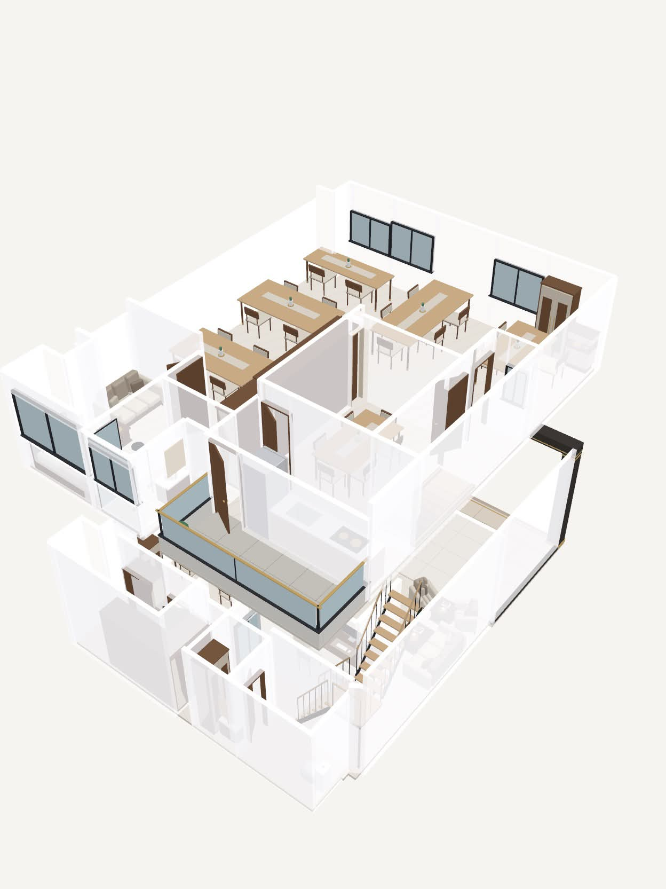

遠展空間Pro｜LiDAR 空間掃描與平面圖：功能、限制與來源查核
一句話摘要
Threads 作者介紹自製 iOS App「遠展空間Pro」，聲稱可運用 LiDAR 掃描空間，建立 2D 圖和 3D 模型並匯出多種格式；作者也強調測量有誤差，精準用途仍須專業丈量。
來源與作者續文
原帖： https://www.threads.com/@daystarck/post/Df16RelH2i2
作者置頂的下載連結： https://www.threads.com/@daystarck/post/Df16VCkH552
作者描述走一圈約兩分鐘產生平面圖、立體與爆炸圖，並聲稱完全免費、無月訂閱。這是作者的體驗與宣稱，不代表所有空間的掃描時間或成果。作者另於回覆表示工具適合基礎空間配置，無法取代逐段精準丈量及必要的專業測量。
App Store 可核對內容
台灣商店： https://apps.apple.com/tw/app/%E9%81%A0%E5%B1%95%E7%A9%BA%E9%96%93pro/id6827859438
2026-11-19 查核，App Store 顯示開發者 CHUN YUAN CHEN、版本 1.3；Apple 公開查詢 API 顯示台灣價格為免費、最低系統版本 iOS 17.0。商店說明由開發者提供，列出多樓層掃描、2D 調整、3D 模型及 PDF、DXF、USDZ、OBJ 匯出；本次未安裝或測試，格式相容性、精度與實際功能不能據此保證。免費下載不等於保證未來永久免費。
商店描述稱使用 iPhone／iPad Pro 的 LiDAR，但商店一般裝置相容清單不等於每一款裝置皆配備 LiDAR；應核對實際機型與作業系統。App Store 的「不收集資料」是開發者提供的隱私標示，並非本次獨立流量稽核。
開發者商店說明註明掃描尺寸及面積僅供室內配置與行銷參考，不動產買賣面積以地政機關登記權狀為準。設計、施工與購置前應由專業人員另行確認尺寸；上傳或分享房屋掃描前，注意住戶同意與隱私。
媒體與查核限制
主帖輪播的三張照片已逐張檢視公開壓縮版：第 1、2 張包含具體場所標示、聯絡電話及空間配置，為降低隱私疑慮不予公開鏡像；第 3 張為無文字的 3D 空間示意，未見人像、帳號或聯絡資料，已保存並公開。圖來自 Threads 作者 @daystarck，為公開壓縮版本，重用授權未確認，不代表已獲授權。影片未觀看。公開留言可能不完整。沒有登入、下載、安裝或執行 App。

資料查核日期：2026-11-19。Apple 的公開查詢： https://itunes.apple.com/lookup?id=6827859438&country=tw